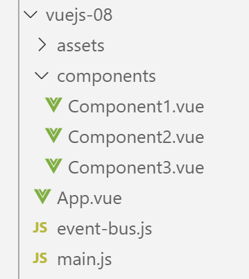

10. projeto [vuejs-08]: eventos independentes da hierarquia de componentes, ciclo de vida dos componentes
O projeto [vuejs-08] demonstra como componentes que não estão diretamente ligados na hierarquia de componentes podem, mesmo assim, comunicar-se através de eventos. A árvore do projeto [vuejs-08] é a seguinte:

10.1. O script principal [main.js]
O script [main.js] permanece tal como estava nos exemplos anteriores.
10.2. O script [even-bus.js]
O script [event-bus.js] é a ferramenta que vamos utilizar para emitir e ouvir eventos:
import Vue from 'vue';
const eventBus = new Vue();
export default eventBus;
O script [event-bus] limita-se a criar uma instância da classe [Vue] (linhas 1-2) e a exportá-la (linha 3). A classe [Vue] possui dois métodos para gerir os eventos:
- [Vue].$emit(nome, dado): permite emitir um evento denominado [nom] e associado ao dado [donnée];
- [Vue].$on(nome, fn): permite interceptar o evento denominado [nom] e fazer com que seja processado pela função [fn]. A função [fn] receberá como parâmetro o dado [donnée] associado ao evento pelo seu emissor;
Esta gestão de eventos não está ligada à hierarquia dos componentes. Basta que os componentes que pretendam comunicar desta forma utilizem a mesma instância da classe [Vue] para emitir/ouvir os eventos. No nosso exemplo, utilizaremos a instância [eventBus] definida pelo script [event-bus.js] anterior.
10.3. A vista principal [App.vue]
O código da vista principal [App] é o seguinte:
<template>
<div class="container">
<b-card>
<b-alert show variant="success" align="center">
<h4>[vuejs-08] : événements indépendants de la hiérarchie des composants, cycle de vie des composants</h4>
</b-alert>
<!-- os três componentes que comunicam através do evento -->
<Component1 />
<Component3 />
<Component2 />
</b-card>
</div>
</template>
<script>
import Component1 from "./components/Component1";
import Component2 from "./components/Component2";
import Component3 from "./components/Component3";
export default {
name: "app",
// componentes
components: {
Component1,
Component2,
Component3
}
};
</script>
- linhas 8-10: a vista principal [App] utiliza três componentes [Component1, Component2, Component3] que irão comunicar através de eventos. Os três componentes encontram-se ao mesmo nível na vista [App]. Além disso, não haverá qualquer relação hierárquica entre eles;
10.4. O componente [Component1]
O código do componente [Component1] é o seguinte:
<template>
<b-row>
<b-col>
<b-alert show
variant="warning"
v-if="showMsg">Evénement [someEvent] intercepté par [Component1]. Valeur reçue={{data}}</b-alert>
</b-col>
</b-row>
</template>
<script>
import eventBus from "../event-bus.js"
export default {
name: "component1",
// estado do componente
data() {
return {
data: "",
showMsg: false
};
},
// métodos de gestão de eventos
methods: {
// gestão do evento [someEvent]
doSomething(data) {
this.data = data;
this.showMsg = true;
}
},
// gestão do ciclo de vida do componente
// evento [created] — o componente foi criado
created() {
// escuta do evento [someEvent]
eventBus.$on("someEvent", this.doSomething);
}
};
</script>
Comentários
- linhas 4-6: um alerta que apresenta o dado [data] da linha 18. Este dado será inicializado pelo gestor de eventos [doSomething] da linha 25. Este gestor é ativado aquando da receção do evento [someEvent] (linha 34). O alerta é exibido em função do valor do atributo [showMsg] da linha 19. Este atributo é, por sua vez, definido pelo gestor de eventos [doSomething] da linha 25;
- linha 32: a função [created] é um gestor de eventos. Esta função gere o evento [created], um evento emitido durante o ciclo de vida do componente. Existem outros eventos, como o [beforeCreate, created, beforeMount, mounted, beforeUpdate, updated, beforeDestroy, destroyed]. O evento [created] é emitido quando o componente é criado;
- linha 12: a instância [eventBus] da classe [Vue] é importada;
- linha 34: é utilizada para monitorizar o evento [someEvent]. Quando este ocorre, o método [doSomething] da linha 25 é chamado;
- linha 25: o método [doSomething] recebe como parâmetro [data] os dados que o emissor do evento [someEvent] associou ao evento;
- linhas 26-27: o estado do componente é alterado para que o alerta das linhas 4-6 exiba os dados recebidos;
10.5. O componente [Component2]
O componente [Component2] é o seguinte:
<template>
<div>
<b-button @click="createEvent">Créer un événement</b-button>
</div>
</template>
<!-- script -->
<script>
import eventBus from '../event-bus.js'
export default {
name: "component2",
// métodos de gestão de eventos
methods: {
createEvent() {
eventBus.$emit("someEvent", { x: 2, y: 4 })
}
}
};
</script>
Comentários
- linha 3: um botão para criar um evento. Quando o utilizador clica neste botão, é chamado o método [createEvent] da linha 13;
- linha 8: a instância [eventBus] definida pelo script [event-bus.js] é importada;
- linha 14: esta instância é utilizada para emitir um evento denominado [someEvent] associado ao dado [{ x: 2, y: 4 }]. Por fim, quando o utilizador clica no botão da linha 3, é emitido o evento [someEvent]. Se nos lembrarmos da definição de [Component1], este irá interceptar esse evento;
10.6. O componente [Component3]
O código deste componente é o seguinte:
<template>
<b-row>
<b-col>
<b-alert show
v-if="showMsg">Evénement [someEvent] intercepté par [Component3]. Valeur reçue={{data}}</b-alert>
</b-col>
</b-row>
</template>
<script>
import eventBus from "../event-bus.js"
export default {
name: "component3",
// estado do componente
data() {
return {
data: "",
showMsg: false
};
},
methods: {
// gestão do evento [someEvent]
doSomething(data) {
this.data = data;
this.showMsg = true;
}
},
// gestão do ciclo de vida do componente
// evento [created] — o componente foi criado
created() {
// escuta do evento [someEvent]
eventBus.$on("someEvent", this.doSomething);
}
};
</script>
O [Component3] é um clone do [Component1]. Existe apenas para demonstrar que um evento pode ser interceptado por vários componentes.
10.7. Execução do projeto [vuejs-08]